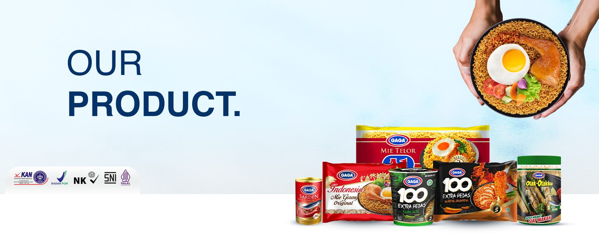

OUR PRODUCTS
Discover the wide range of GAGA products that bring authentic Indonesian flavors to your table.
GAGA 100 Extra Pedas
The noodle made with the best quality wheat flour served with famous Indonesian herbs and spices, available in five different variants.
Learn More
GAGA Indonesia Mie
Instant Fried Noodles with a soft texture and a blend of sweet and savory flavors, complemented by chili sauce, soy sauce, and fried onions in hygienic packaging. Now available in one variant.
Learn MoreGAGA Sardines
Made from high-quality fresh sardines with a delicious taste of tomato and chili sauce. Each serving is packed with nutrients, uses fresh ingredients without preservatives, and is conveniently packaged for immediate consumption.
Learn MoreGAGA Gepeng
The noodle made with the best quality wheat flour served with famous Indonesian herbs and spices, available in four different variants.
Learn MoreGAGA Sosis & Otak-Otak
A tasty sausage made from fresh fish. Loncat Sausage comes in two flavors: chicken and beef, and is a ready-to-eat product.
Learn MoreGAGA Mie Aussie
Special Instant Noodle with two different flavors, made from pure Australian wheat combined with traditional Indonesian spices for guaranteed quality.
Learn MoreGAGA 100 Extra Pedas Saus Sambal
Special Instant Noodle made with pure Australian wheat combined with Indonesian traditional spices, available in two different flavors.
Learn More.jpg)
GAGA Beef Ready to Eat
Ready-to-eat product made from beef, rich in protein and iron, processed with sterilization and no preservatives, featuring famous Indonesian herbs and spices. Available in two different variants.
Learn MoreGAGA Mie Telor A1
Premium quality wheat noodles with a chewy texture, perfect for various types of preparations.
Learn MoreGAGA Bakmi
Premium quality wheat noodles with a chewy texture, suitable for a variety of dishes.
Learn MoreGAGA Bubur
Ready-to-eat desserts available in two variants: Mix Bean Porridge and Black Glutinous Rice Porridge, rich in nutrients and antioxidants.
Learn MoreGet in Touch
PT Jakarana Tama
Head Office:
Jl. Bintaro Raya No.15, RT.11/RW.10
Kebayoran Lama Selatan
Jakarta Selatan, Indonesia, 12240
Operating Hours: 08.00 - 16.00
Phone: (021) 7292728
Email: info@jakaranatama.co.id